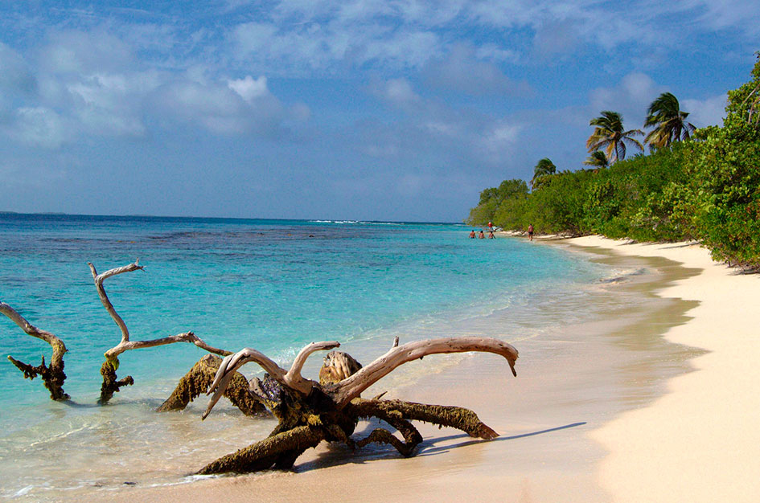

Cayo Sombrero, Morrocoy
1/4

Cayo Sombrero, corresponde a una de las paradisiacasislas del Parque Nacional Morrocoy , sitio famoso porsus espectaculares paisajes submarinos e idílicas playas de arenas blancas y aguas turquesas.